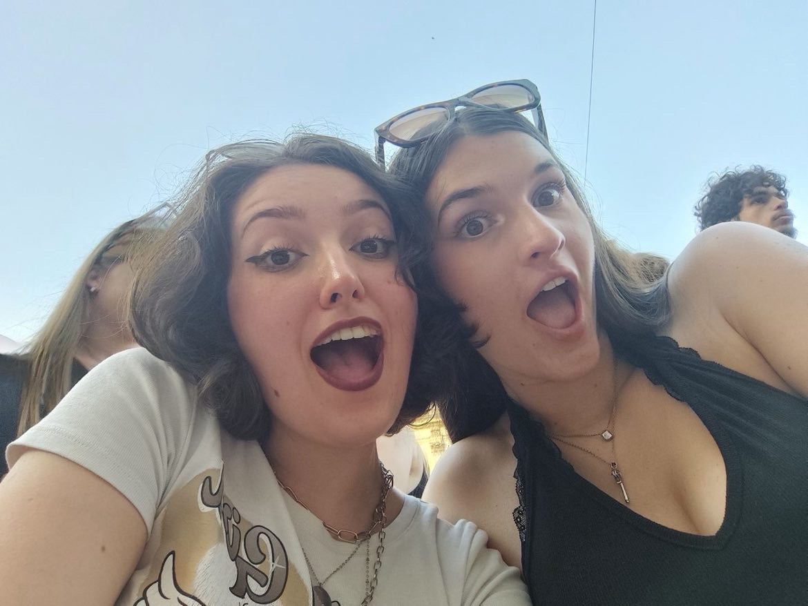
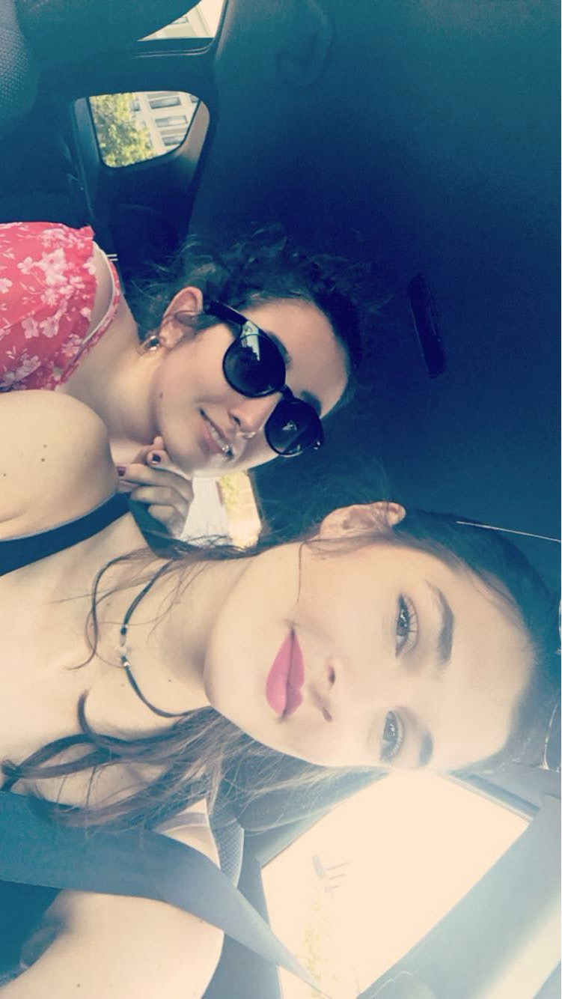
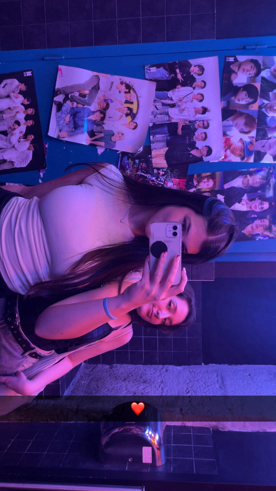
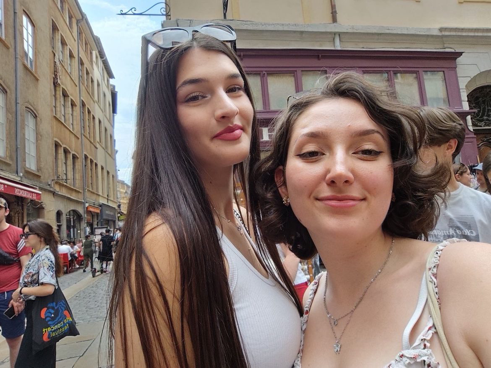
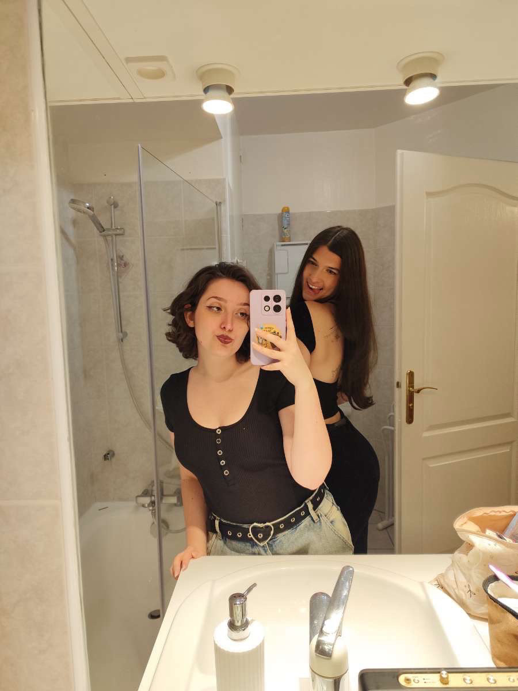
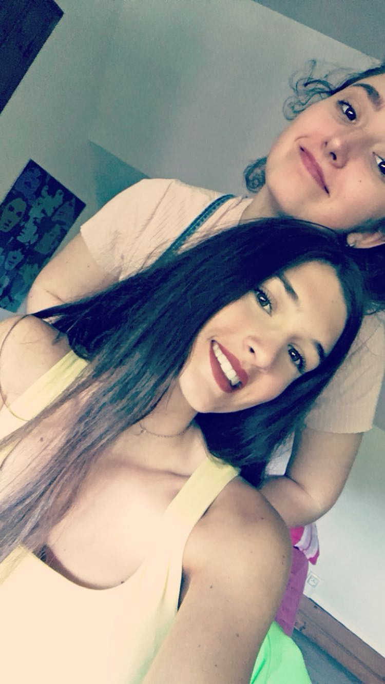
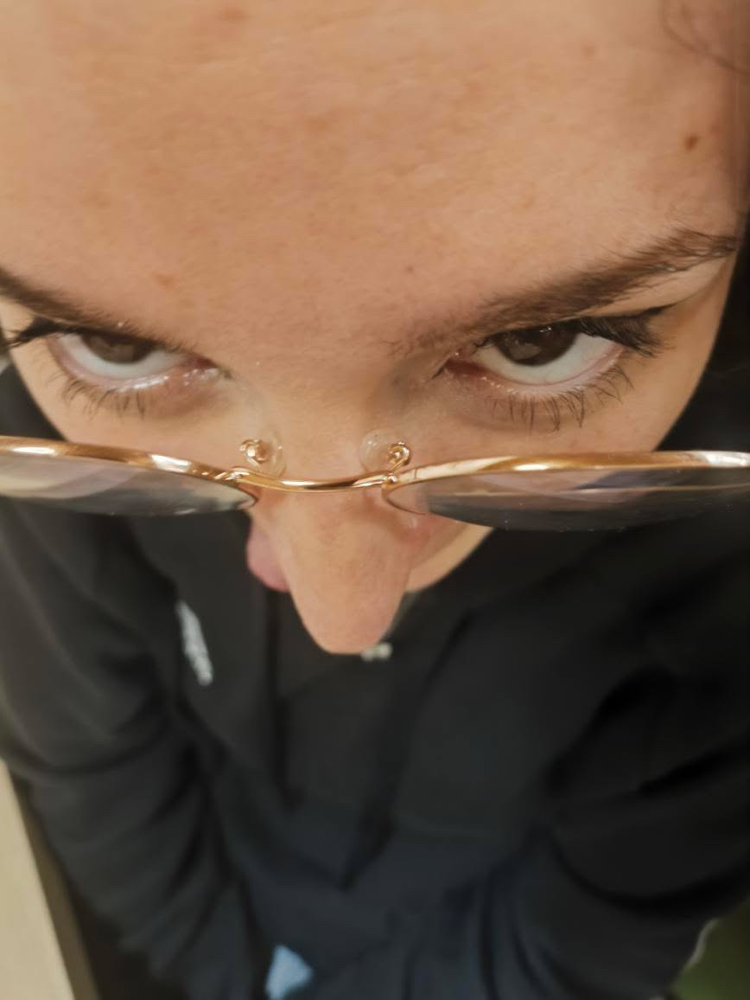

NATHAN
Bon anniversaire ma petite vieille de manchouris je serais toujours là pour toi tu le sais bien !
y'a des photos en bas 👁️👁️

avant le drame ...
MARGAUX
Ma vie, mon amour, ma moitié, la prunelle de mes yeux (oui j’essaye de te mettre mal à l’aise avec des mots d’amour dès le début)
Je t’écris ce petit mot pour ton anniversaire, tu sais déjà tout mais ça reste important que je te dise encore ce que j’ai sur le coeur et ce que je ressens vis à vis de toi (parce que t’as du mal à accepter qu’on puisse t’aimer et tu mérites qu’on t’aime grognasse)
Malgré nos 5 ans de « no contact » c’est comme si l’on ne s’était jamais quittées, j’ai instantanément retrouvé ma Juliette il y a 1 an.
1 an que l’on se voit régulièrement et je suis tellement heureuse de t’avoir retrouvé. J’ai l’impression que vous avons rattrapé ces 5 ans cette année et ces moments resteront gravés dans ma mémoire et mon coeur.
Je me sens tellement bien en ta présence, jamais jugée, toujours entrain de rigoler peut importe la situation ou le moment de nos vies. Peut importe ce qu’il se passe tu sais que je suis là pour toi et je sais que tu es la pour moi.
Je sais que tu as traversé beaucoup de périodes douloureuses dans ta vie et que je n’ai pas forcément était la pour certaines du fait de la distance/ éloignement mais j’essaye de comprendre la personne que tu es devenue aujourd’hui et de grandir avec toi.
Je n’ai pas eu encore l’occasion de t’exprimer aussi à quel point je suis contente de te savoir dans une relation « saine » même s’il s’agit des débuts et que pour l’instant elle se fait à distance, je suis heureuse de savoir que tu es respectée et aimée. Tu mérites.
Concernant ta nouvelle vie (temporaire) sur paris je te souhaite vraiment de découvrir et d’apprécier cette ville comme j’ai pu la découvrir avec William, je suis sure que tu y passeras plein de beaux moments et j’ai déjà hâte de venir te voir une fois que tu seras installée dans ton vrai appart.
Je te souhaite le meilleur Juliette, tu as vraiment une belle âme.
Je sais qu’il nous reste plein de choses à vivre ensemble
Ce n’est que le début
Je t’aime❤️🩹
Ta Margaux 🩵
y'a des photos en bas 👁️👁️

t'as vraiment belle sur celle la quand meme

merci margaux pour celle la

rio de janero

POUSSE TOI MARGAUX ON VOIT PAS ASSEZ MA FEMME

bad bitch hein 👁️👁️

🫠🫠
j'ai pas les mots

une epoque bien lointaine
CHAWKI
Salut Ju! Héloïse et moi on a kiffé te rencontrer, c'était grave cool, on se refait ça asap! Et joyeux anniversaire à toi fête bien longue vie! 🎊🥳

j'te grail le front